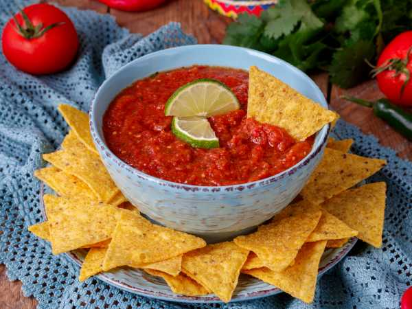
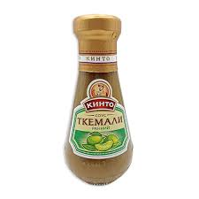

Топ 3 Острых Блюда
 
1. Хабанеро Сальса
Острая сальса с перцем хабанеро. Идеально подходит для мексиканских блюд.
2. Ткемали
Грузинский соус из алычи, который обладает характерной остротой.
3. Кимчи
Корейское блюдо из ферментированных овощей с добавлением острого перца.